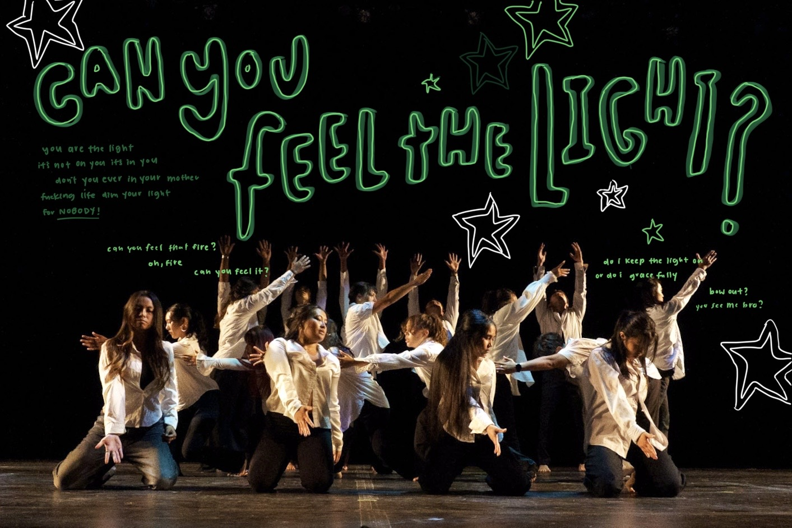
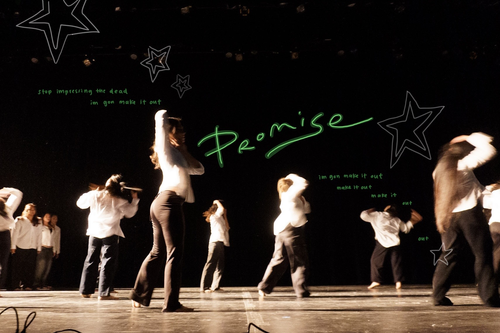

As a coordinator, choreographer, and member of PCN (Pilipino Cultural Night) at my university, our production was a source of great pride for me. I wanted to integrate photographs of our performance with my own designs to create something that visually represented how our performance felt, looked, and sounded to both the audience and to us performers. Using a basic drawing app on my iPad, I illustrated over a set of photos from our lyrical dance piece.

